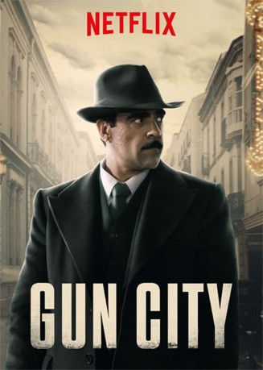

#9845 Gun City
 
 IMDB-Wertung: 6.4 / 10
IMDB-Wertung: 6.4 / 10  Metascore: 0
Metascore: 0 
Jahr 1921: Im Thriller Gun City überfällt eine unbekannte Gruppe von Männern einen Zug des Militärs, der mit Waffen und Munition beladen ist. Inspektor Anibal Uriarte soll im Auftrag der Bundespolizei während eines Konflikts zwischen Anarchisten und der Polizei in Barcelona die Kriminellen finden, bevor es noch mehr Tote gibt und es im schlimmsten Fall ein Bürgerkrieg auslösen könnte.
Jahr: 2018
Dauer: 126 Minuten
FSK:
Land: Spanien Studio: 20th Century FoxTonspuren: - , - ,
Untertitel: Deutsch, Englisch,
Auflösung: 1080p (1920x1080) Größe: 4362 MB
Genre: Thriller
Regisseur: Dani de la Torre
Drehbuch: Patxi Amezcua
Soundtrack: Xavier Font, Manuel Riveiro
Darsteller:
 Luis Tosar als Aníbal Uriarte
Luis Tosar als Aníbal Uriarte- Michelle Jenner als Sara
 Vicente Romero als Inspector Rediú
Vicente Romero als Inspector Rediú Manolo Solo als El Barón
Manolo Solo als El Barón Jaime Lorente als León
Jaime Lorente als León- Pep Tosar als Comisario Verdaguer
- Adriana Torrebejano als Lola
 William Miller als García Serrano
William Miller als García Serrano- Albert Pérez als Manco
 Fernando Cayo als Ministro
Fernando Cayo als Ministro- Tania Lamata als Telefonista
- Paco Tous als Salvador Ortiz
- Ernesto Alterio als Tísico
- José Manuel Poga als Mallorquín
- Fredi Leis als Beltrán
- Ricardo de Barreiro als Jefe de Turno
- Paula del Río als Elisa
- Xosé Barato als Maitre
- Federico Pérez als Comerciante
- Nacho Castaño als Pelirrojo
- Santi Prego als Gerente
- Toni Salgado als Hombre con parche en el ojo
- Paula Morado als Madre de Elisa
- Laura Nuñez als Niña
- Sonia Rúa als Madre agresiva
- Elías Pelayo als General Martínez Anido
- Sheyla Fariña als Mujer del Pelirrojo
- Mariña Sampedro als Flaca
- Covadonga Berdiñas als Dueña de Pensión
- Machi Salgado als Don Alfonso
- Mercedes Castro als Jefa de Turno
- Miguel Canalejo als Periodista 1
- David Jenner als Anarquista 1
- César Souto als Periodista 2
- Ademar Silvoso als Periodista 3
- Nuno Vilela als Chaval Periódicos 1
- Alberto Pérez als Chaval Periódicos 2
- Julia Cortés de Juan als Chica con las plumas
- Toni Cayuela als Manuel
- Patricia Torres als Telefonista abofeteada
- Joan Serrats als Policía Banco
- Richard Menchaca als Empleado de Tren
- Marc Udina als Chico Periódicos 3
- Alejandro Martínez als Compañero Bigotón
- David Linares als Guillem
- Juan Antonio Ballesteros als Grandullón
- David Martín Surroca als Anarquista del proletariado
- Marcos Javier Fernández Eimil als Acompañante en coche
- Santos Mallagray als Chaval Periódicos 2
Datei: X:\2018(G-M)\Gun City (2018, FSK, 1920x1080).mkv seit 02.11.2018
Festplatte: HD 2018(G-Z)-2019(A-Z)
 Es gibt insgesamt 138 Filme in der Gruppe '2018(G-M)'
Es gibt insgesamt 138 Filme in der Gruppe '2018(G-M)'